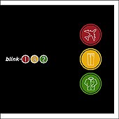

|
New CD Review
Blink 182 - "Take Off Your Pants and Jacket" (2001) |
|

It's obvious from many songs that they're now targetting kids in their early-mid adolescence. Now that this has been explicitly stated (by the band, not just by me,) why do we feel the need to rid the world of them? Can't kids have their own exclusive bands to listen to? Or do we expect them to make the jump from toddlerhood immediately to Barry Manilow (whom we will all be listening to one day)? ...
... Continued -> Click for more CD reviews |
| Mr. Hungry |
|
This is my tribute to the Mr. Men books I used to read when I was young. I made this for my Writer's Craft class (June 2002). We were supposed to do a children's book, but I didn't want to do yet another silly alphabet book ("A was an actor... B was a ballet dancer...") Knowing that the mark I would get in class would have no effect on my university entrance in September, I decided to go ahead with this, since it'd be much more fun.
|

| NEWS: Ramones Tribute Album |
|
THIS JUST IN: Garbage will be doing a cover of "I Just Want to Have Something to Do"!
So there's going to be another tribute album to those lovely Ramones. I'm very excited, since the line-up has many household names. Some rumoured acts will be U2, Rancid and Rob Zombie... and I can't remember anymore than that... I think one of them will be covering Sheena is a punk rocker though... The only downside is that the producer is... Rob Zombie. That man's music is so awful, but I guess his songs are pretty catchy for 'metal'. Though one can say that his role won't really be a factor - remember what Sarah McLachlan did to the electronica compilation Plastic series... ooooh no good... |
| Quick Links |
|
|
| The Clothing Show (05/12/02) |
|
This was one of the most enjoyable shopping experiences of my life...
... Continue -> Click for more Experiences |
| Worthwhile CD Reviews |
|
Oh, and if you disagree with me, or have something to add, or wrote your own review that you want posted, then you can head right over to Geocities and make your own site. |